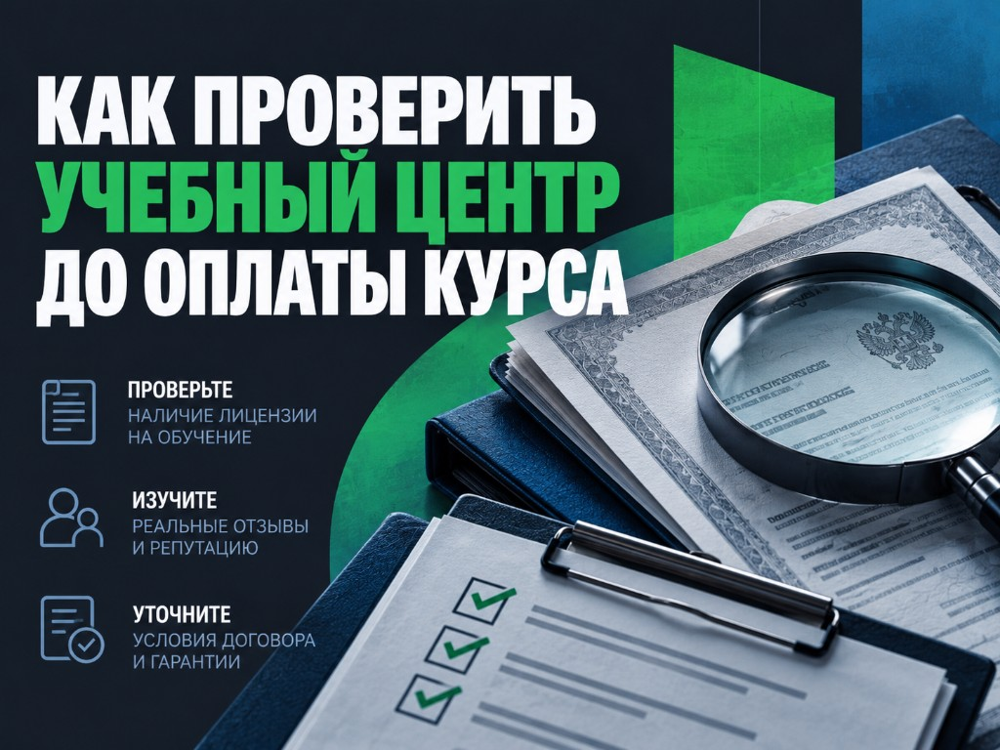
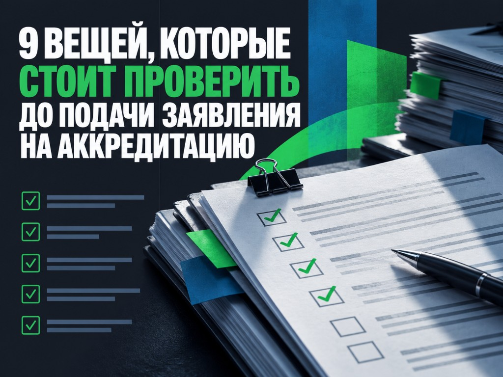

Перейти к содержанию
Посты
1
Центр17025: чем мы занимаемся и кто работает с лабораториями
Что необходимо предоставить
- 3–4 случая из практики работы с лабораториями.
- Должность, специализация и опыт Альбины Шишкиной.
- Должность, специализация и опыт Александра Шикова.
- От каждого специалиста: типовые вопросы клиентов и один случай из практики.
- Фото специалистов или кадры из лекций.
2
Как проходит аккредитация лаборатории с сопровождением Центра17025
Что необходимо предоставить
- Актуальный список этапов сопровождения.
- По каждому этапу: работы Центра17025, работы лаборатории, результат и срок.
- Пояснение по срокам 3–8 месяцев.
- Комментарий Альбины Шишкиной о разделении ответственности.
- Обезличенный календарный план проекта.
- Примеры результатов этапов: акт аудита, перечень документов, подтверждение обучения.
3
Почему лаборатория может оказаться не готова к аккредитации, даже если документы собраны
Что необходимо предоставить
- Случай из практики по области аккредитации.
- Случай из практики по персоналу.
- Случай из практики по оборудованию или помещениям.
- Комментарий эксперта: какие проблемы встречаются чаще и что проверить до подачи заявления.
- Обезличенные фрагменты документов, если можно.
4
СМК существует на бумаге, но не работает: что показывает аудит лаборатории
Что необходимо предоставить
- Случай из практики, когда документы СМК не совпадали с реальной работой.
- Описание, как проблему устраняли.
- Комментарий Александра Шикова о признаках бумажной СМК.
- Обезличенные фрагменты процедуры, записи или аудита, если можно.
5
Подтверждение компетентности лаборатории: что нужно подготовить заранее
Что необходимо предоставить
- Список из 8–10 документов и записей, которые проверяют перед ПК.
- 2–3 случая из практики подготовки к ПК.
- 3–5 примеров вопросов или демонстраций во время оценки.
- Комментарий специалиста о сроках подготовки к ПК.
- Обезличенные рабочие записи, если можно.
6
Как проходит обучение специалистов лабораторий в Центре17025
Что необходимо предоставить
- Запись реальной лекции.
- Фрагмент 30–60 секунд для публикации.
- Название программы, тема занятия и ФИО преподавателя.
- Схема обучения от заявки до получения документа.
- Скриншот учебной платформы без персональных данных.
- Образец итогового документа.
- Разрешение использовать запись преподавателя.
- Подтверждение актуальности лицензии.
7
Кейс Центра17025: подготовка лаборатории к аккредитации с нуля
Что необходимо предоставить
- Один завершённый проект лаборатории с нуля.
- Исходная ситуация лаборатории.
- Перечень выполненных работ.
- Сроки по этапам.
- Итоговый результат.
- 3–5 подтверждающих материалов по проекту.
- Отзыв клиента, если есть.
- Что можно указывать в публикации, а что нужно обезличить.
Пример визуального оформления

